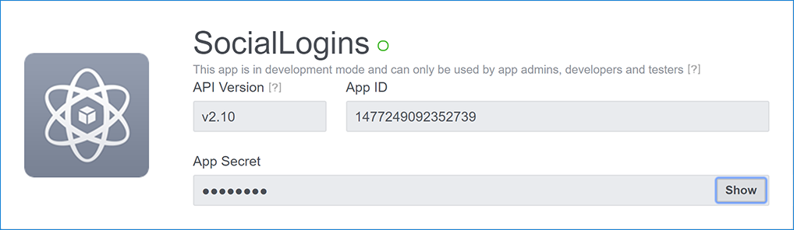
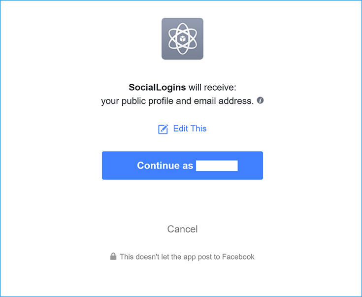
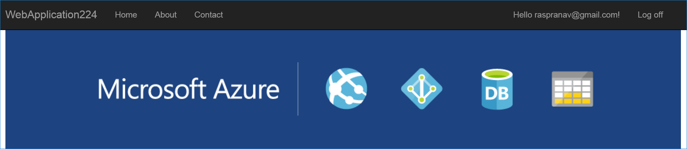

Configuring Facebook authentication
By Valeriy Novytskyy and Rick Anderson
This tutorial shows you how to enable your users to sign in with their Facebook account using a sample ASP.NET Core 2.0 project created on the previous page. We start by creating a Facebook App ID by following the official steps.
Create the app in Facebook
Navigate to the Facebook for Developers page and sign in. If you don't already have a Facebook account, use the Sign up for Facebook link on the login page to create one.
Tap the Create App button in the upper right corner to create a new App ID.

Fill out the form and tap the Create App ID button.

When presented with Select a product prompt, Click Set Up on the Facebook Login card.

The Quickstart wizard will launch with Choose a Platform as the first page. Bypass the wizard for now by clicking the Settings link in the menu on the left:

You are presented with the Client OAuth Settings page:

Enter your development URI with /signin-facebook appended into the Valid OAuth Redirect URIs field (for example:
https://localhost:44320/signin-facebook). The Facebook authentication configured later in this tutorial will automatically handle requests at /signin-facebook route to implement the OAuth flow.Click Save Changes.
Click the Dashboard link in the left navigation.
On this page, make a note of your
App IDand yourApp Secret. You will add both into your ASP.NET Core application in the next section:
When deploying the site you need to revisit the Facebook Login setup page and register a new public URI.
Store Facebook App ID and App Secret
Link sensitive settings like Facebook App ID and App Secret to your application configuration using the Secret Manager. For the purposes of this tutorial, name the tokens Authentication:Facebook:AppId and Authentication:Facebook:AppSecret.
Configure Facebook Authentication
The project template used in this tutorial ensures that Microsoft.AspNetCore.Authentication.Facebook package is already installed.
- To install this package with Visual Studio 2017, right-click on the project and select Manage NuGet Packages.
To install with .NET Core CLI, execute the following in your project directory:
dotnet add package Microsoft.AspNetCore.Authentication.Facebook
Add the Facebook service in the ConfigureServices method in the Startup.cs file:
services.AddIdentity<ApplicationUser, IdentityRole>()
.AddEntityFrameworkStores<ApplicationDbContext>()
.AddDefaultTokenProviders();
services.AddAuthentication().AddFacebook(facebookOptions =>
{
facebookOptions.AppId = Configuration["Authentication:Facebook:AppId"];
facebookOptions.AppSecret = Configuration["Authentication:Facebook:AppSecret"];
});
Note: The call to AddIdentity configures the default scheme settings. The AddAuthentication(string defaultScheme) overload sets the DefaultScheme property; and, the AddAuthentication(Action<AuthenticationOptions> configureOptions) overload sets only the properties you explicitly set. Either of these overloads should only be called once when adding multiple authentication providers. Subsequent calls to it have the potential of overriding any previously configured AuthenticationOptions properties.
See the FacebookOptions API reference for more information on configuration options supported by Facebook authentication. Configuration options can be used to:
- Request different information about the user.
- Add query string arguments to customize the login experience.
Sign in with Facebook
Run your application and click Log in. You see an option to sign in with Facebook.

When you click on Facebook, you are redirected to Facebook for authentication:

Facebook authentication requests public profile and email address by default:

Once you enter your Facebook credentials you are redirected back to your site where you can set your email.
You are now logged in using your Facebook credentials:

Troubleshooting
- ASP.NET Core 2.x only: If Identity is not configured by calling
services.AddIdentityinConfigureServices, attempting to authenticate will result in ArgumentException: The 'SignInScheme' option must be provided. The project template used in this tutorial ensures that this is done. - If the site database has not been created by applying the initial migration, you get A database operation failed while processing the request error. Tap Apply Migrations to create the database and refresh to continue past the error.
Next steps
This article showed how you can authenticate with Facebook. You can follow a similar approach to authenticate with other providers listed on the previous page.
Once you publish your web site to Azure web app, you should reset the
AppSecretin the Facebook developer portal.Set the
Authentication:Facebook:AppIdandAuthentication:Facebook:AppSecretas application settings in the Azure portal. The configuration system is set up to read keys from environment variables.